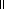

Proof of full sub-symmetric-premonoidal-category
Proposition
(Full sub-strict-symmetric-premonoidal-category).
C
 P
is a full sub-strict-symmetric-premonoidal category of
D
Q.
P
is a full sub-strict-symmetric-premonoidal category of
D
Q.
Proposition
(Full sub-strict-symmetric-premonoidal-category).
C
P
is a full sub-strict-symmetric-premonoidal category of
D
Q.
We have a functor
F :
P
 Q given by the pushout diagram. We will first show
that this functor is monic.
Q given by the pushout diagram. We will first show
that this functor is monic.
For any strict symmetric premonoidal category
P
let
P be the strict symmetric premonoidal category given by adjoining a new object
and making the tensors strict.
Let lift be the functor
P
P.
be the strict symmetric premonoidal category given by adjoining a new object
and making the tensors strict.
Let lift be the functor
P
P.
We can find a strict symmetric premonoidal functor test such that:
| lift : | LGraph(C,P) | |
LGraph(C,P) |
 |
 | ||
| test : | State(LGraph(Mix(C,P))) | |
LGraph(C,P) |
such that test(S) = .
Then:
| LGraph(C,P) |  |
P |
|
 |
|
| State(LGraph(Mix(C,P))) |
LGraph(C,P)
|
P |
and since we defined
Q
as a pushout, this means we have a unique symmetric premonoidal functor
test :
Q
P
making the pushout diagram commute. In particular, we have
F ; test = lift, and since lift is monic, so is F.
:
Q
P
making the pushout diagram commute. In particular, we have
F ; test = lift, and since lift is monic, so is F.
For fullness, for any f : F(X)
F(Y)
in Q
we can find
(since [[_]]Q is epi) a graph
G : X Y
such that:
Y]]Q
=
f : F(X)
F(Y)
Since test(F(X))  we have
S
we have
S  X, so X is in
LGraph(C,P),
and similarly for Y. Since
LGraph(C,P)
State(LGraph(Mix(C,P)))
is a full subcategory,
G is in
LGraph(C,P)
and so [[G]]P is in P.
By the pushout diagram, F[[G]]P =
f, and so
P is a full sub-strict-symmetric-premonoidal-category of
Q.
X, so X is in
LGraph(C,P),
and similarly for Y. Since
LGraph(C,P)
State(LGraph(Mix(C,P)))
is a full subcategory,
G is in
LGraph(C,P)
and so [[G]]P is in P.
By the pushout diagram, F[[G]]P =
f, and so
P is a full sub-strict-symmetric-premonoidal-category of
Q.